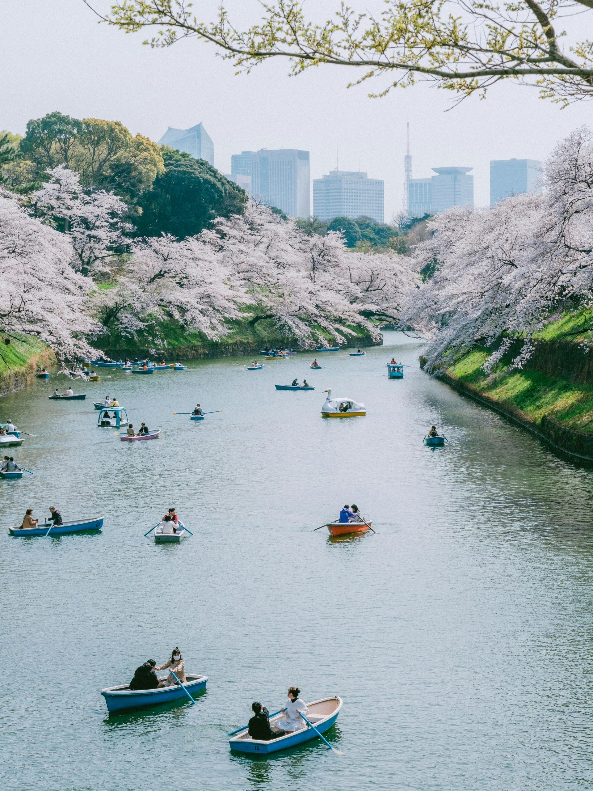
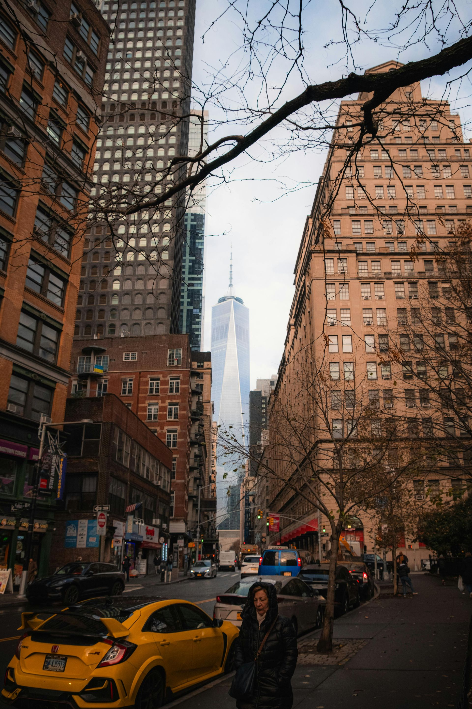
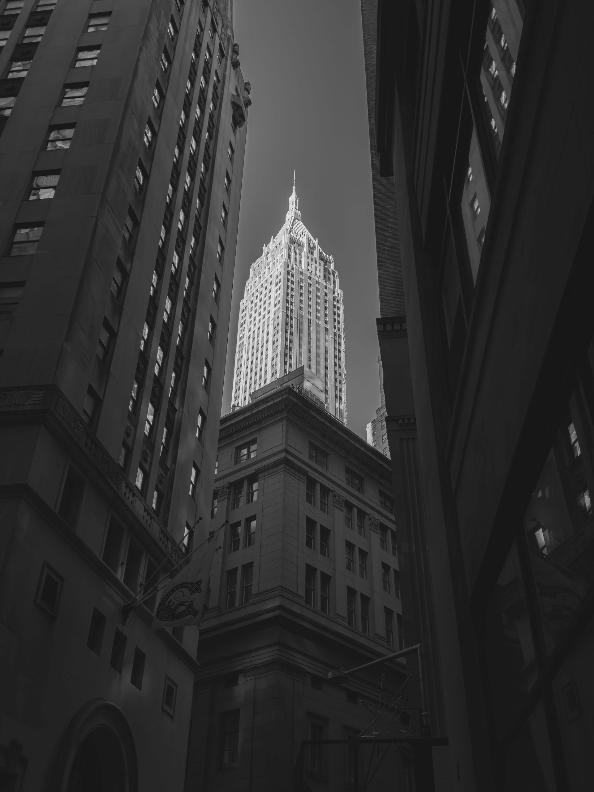
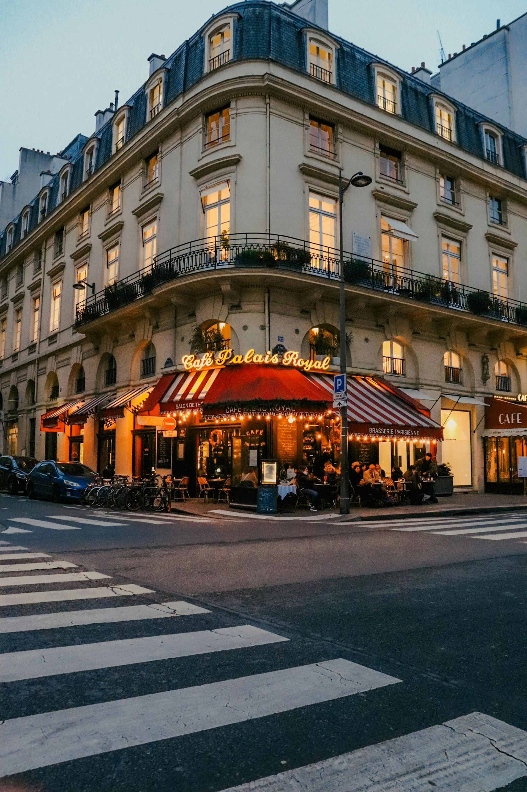
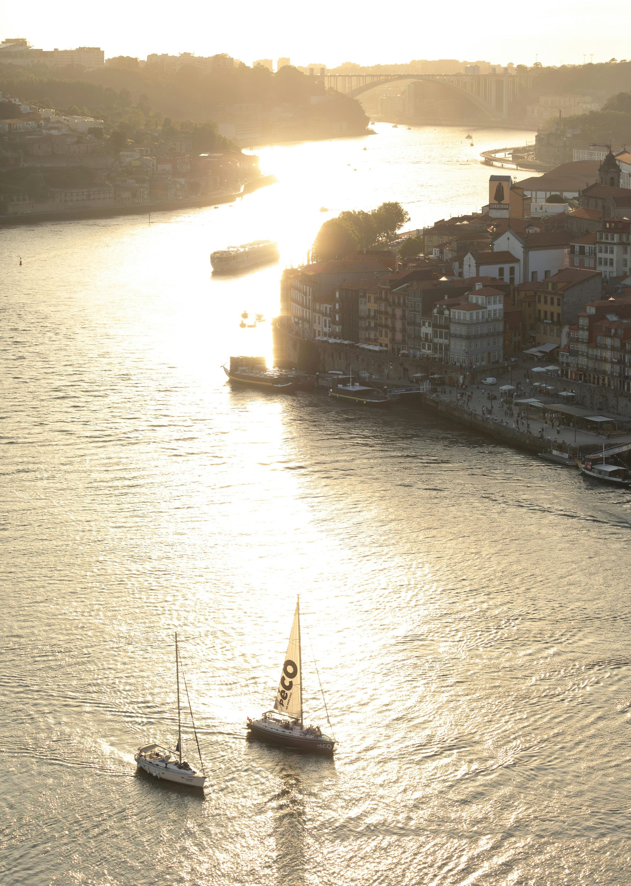
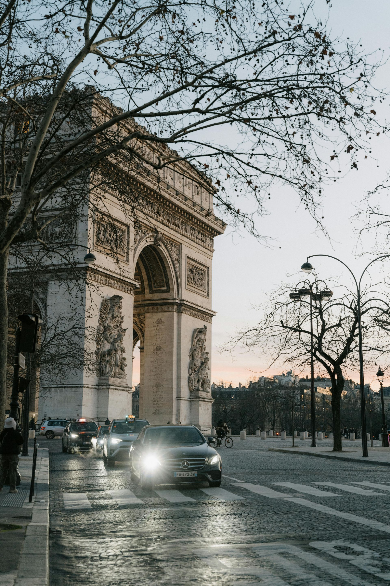
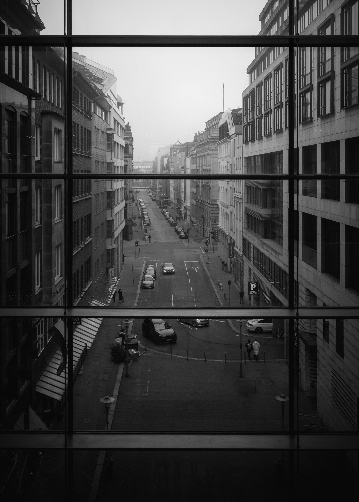

Studio Creativo
Transformamos tus ideas en arte

Fotografía de Wenchengphoto

Fotografía de Supreme from Queens

Fotografía de Allen Boguslavsky

Fotografía de Celine
Fotografía de Grisha Besko

Fotografía de Kaiwalya Limaye

Fotografía de Matreding

Fotografía de Njeromin
×
Elige una opción:
Ver a pantalla completa
Ajustar con máxima calidad